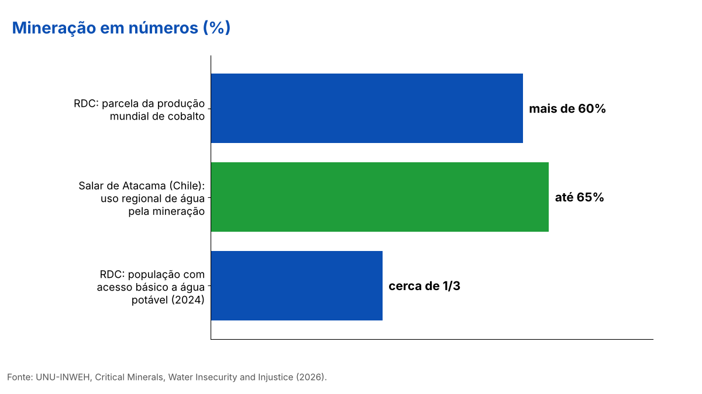
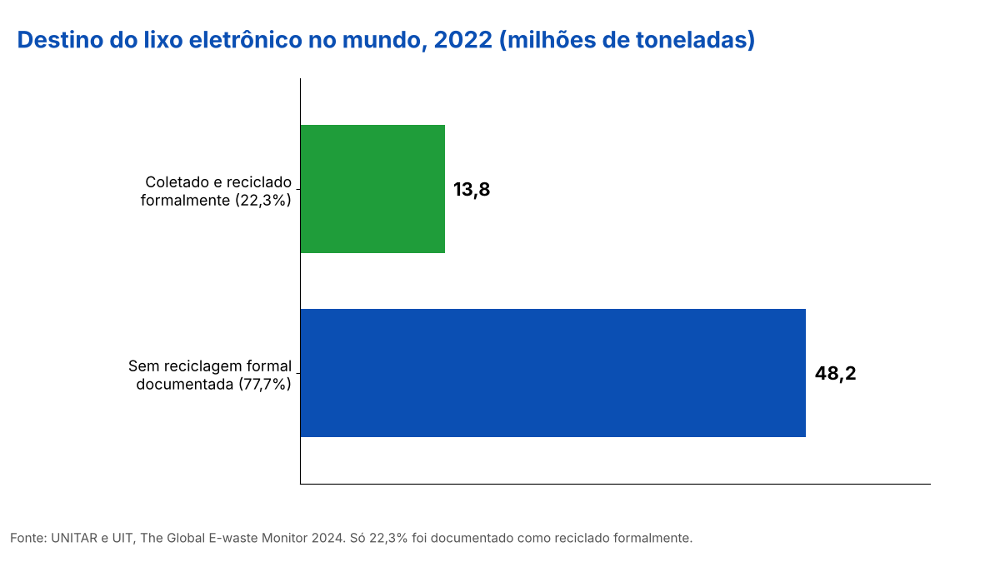

1. Extração
Texto sobre os minérios usados nos eletrônicos (lítio, cobalto, ouro, cobre) e os impactos da mineração no solo, na água e nas comunidades.
Fonte: Instituição ou autor, título do documento (ano). Acessar
Todo aparelho eletrônico começa em uma mina e, se for descartado errado, termina em um lixão. Veja as quatro etapas desse caminho.
Texto sobre os minérios usados nos eletrônicos (lítio, cobalto, ouro, cobre) e os impactos da mineração no solo, na água e nas comunidades.
Fonte: Instituição ou autor, título do documento (ano). Acessar
Texto sobre o gasto de energia, água e materiais para produzir um aparelho.
Fonte: Instituição ou autor, título do documento (ano). AcessarTexto sobre a vida útil curta dos aparelhos e a obsolescência programada.
Fonte: Instituição ou autor, título do documento (ano). AcessarTexto sobre o lixo eletrônico e os riscos de metais pesados no ambiente e na saúde.
Fonte: Instituição ou autor, título do documento (ano). Acessar
Existe saída: conheça a logística reversa.